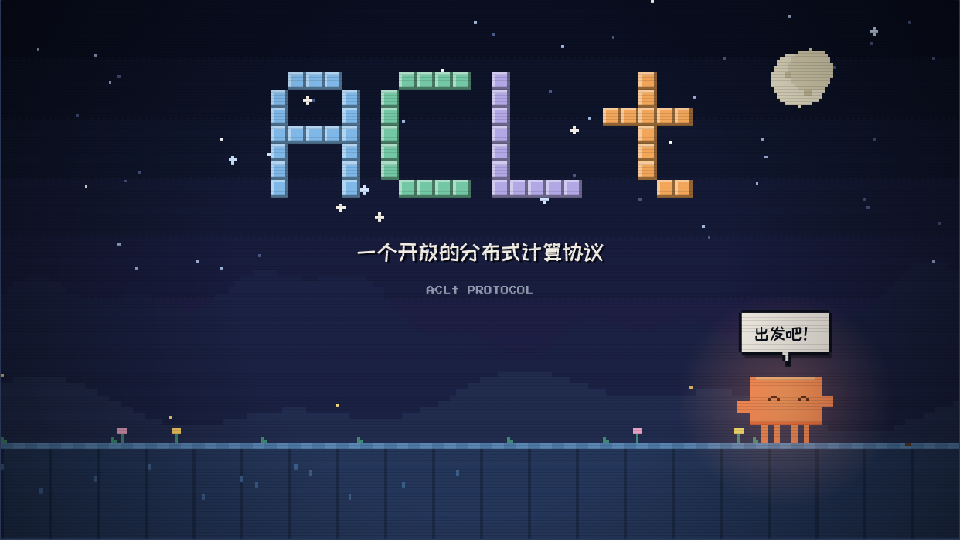
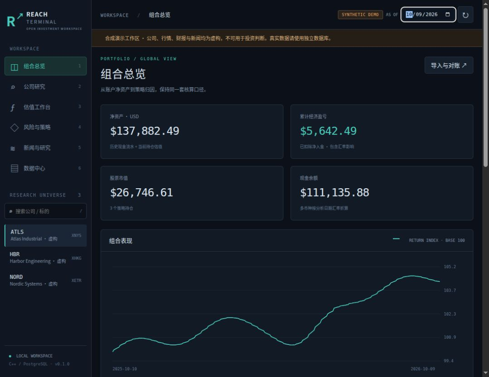
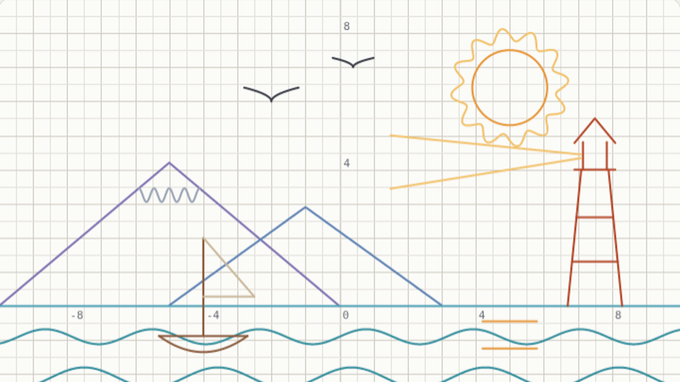

▶ 演示PROJECTS
项目与演示
这里汇总我们的公开项目和在线演示。每个项目的成熟度、许可证和使用边界以各自仓库为准。

▶ 演示ReachTerminal
开源、自托管的投资研究终端：基本面研究、估值、风险与数据溯源放在同一个本地工作区，不含下单代码。联网测试版已接入 SEC 公开财务数据与美股原始日线。
联网测试版已用 IBM 完成从抓取到研究页面的全链路验证，其他证券需要个人免费数据密钥。截图与在线演示仍使用合成数据：按项目约定，真实数据只保留在本机，不在网页上再分发。

▶ 演示